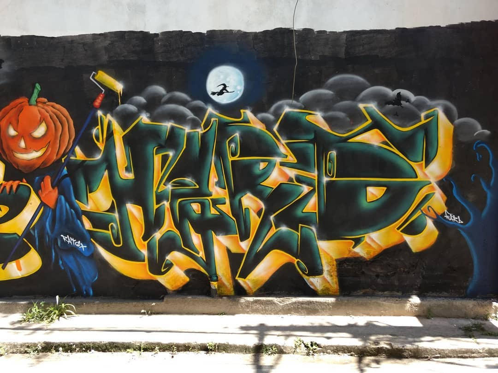
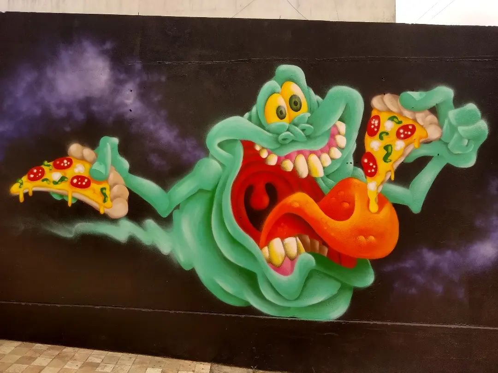
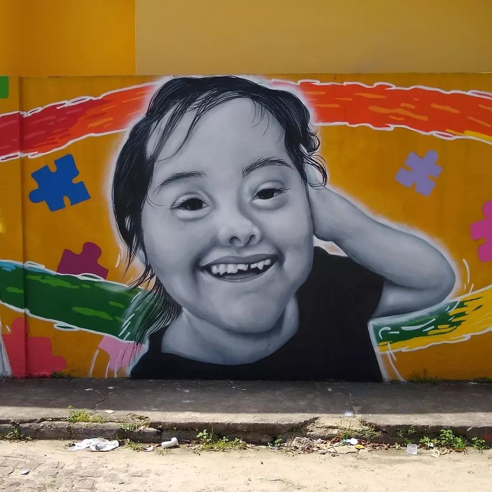
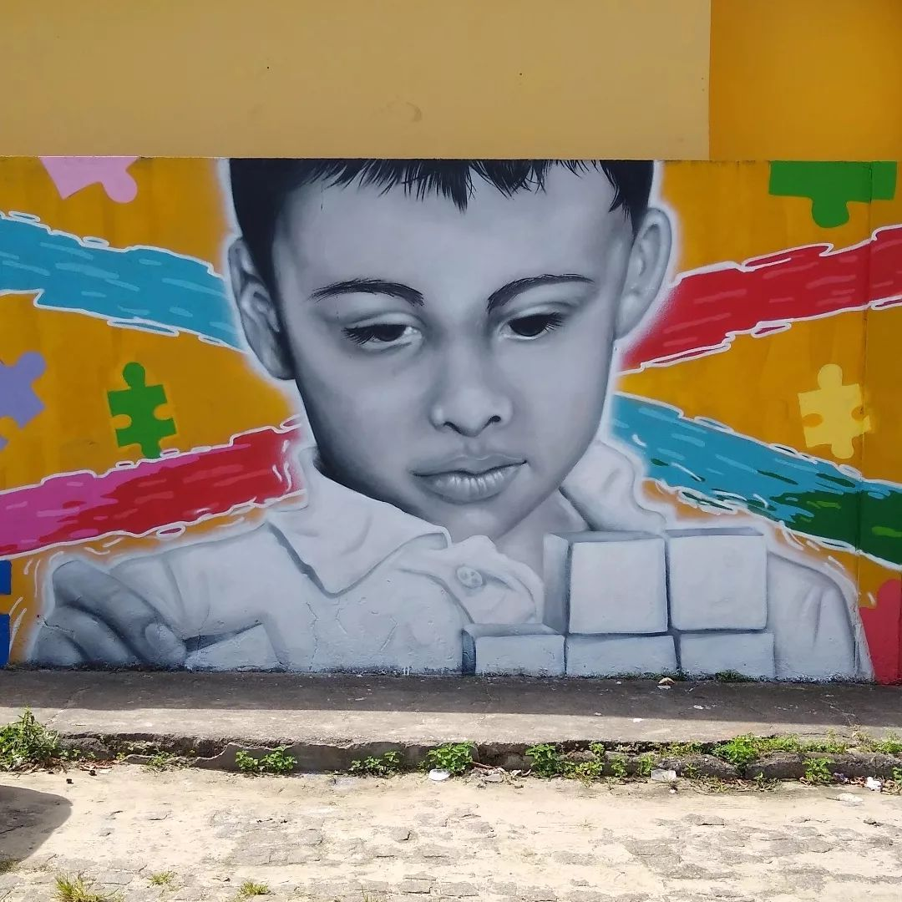
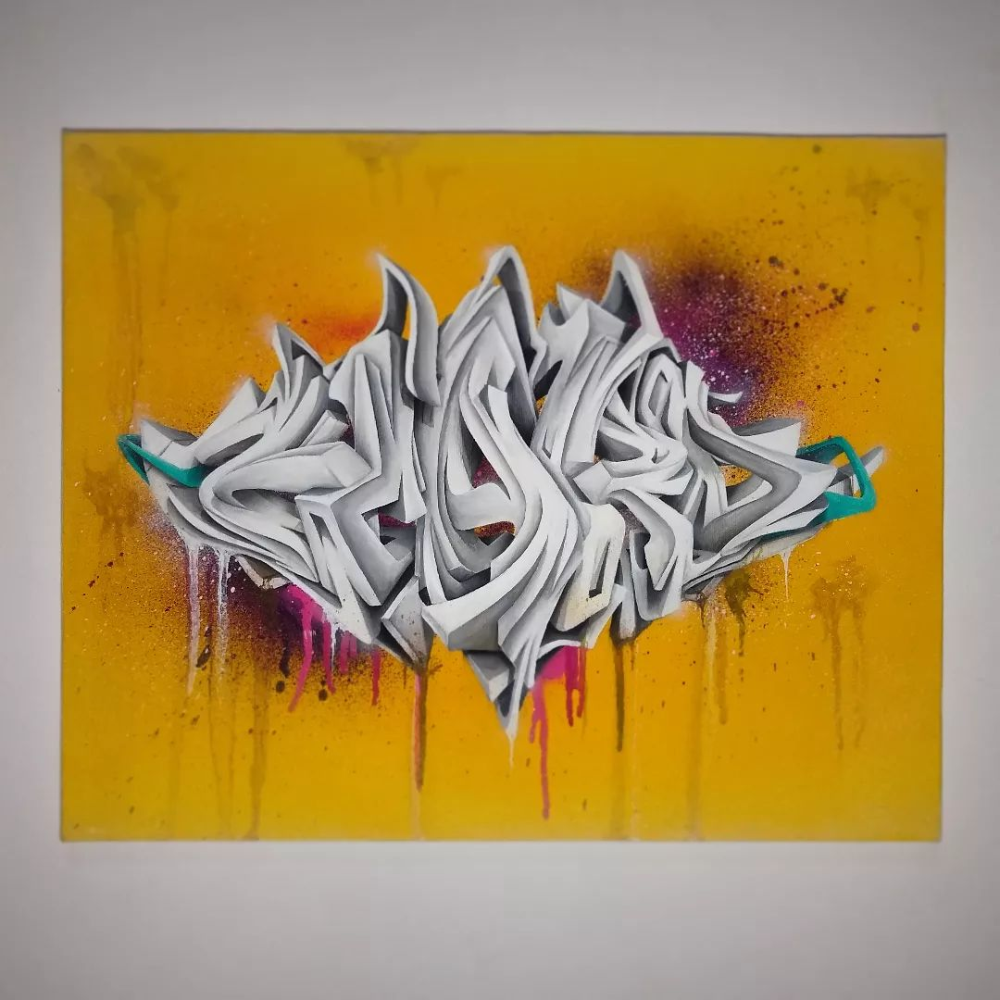

O grafite é uma expressão artística realizada em
espaços públicos. Essa arte surgiu da realidade da
periferia urbana e evidencia críticas sociais.
A arte do grafite é uma manifestação artística que
acontece em espaços públicos.
Os grafiteiros expressam narrativas da cidade,
questões diversas que atravessam a realidade social,
propondo críticas e reflexões. Essa manifestação
artística está relacionada principalmente ao hip-hop,
movimento cultural que teve início no começo dos anos
70 nos EUA pelas comunidades latinas, afro-americanas
e jamaicanas, O bairro novaiorquino do Bronx foi o
berço do grafite, onde os primeiros desenhos foram
feitos com tinta spray. Naquela época, os jovens
utilizavam a arte nas ruas como forma de protesto.
O grafite no Brasil surgiu na década de 70,
precisamente na cidade de São Paulo. Ela nasce
numa época conturbada da história do Brasil, em
que a população era silenciada pela censura com a
ditadura militar no poder.Paralelamente ao
movimento que despontava em Nova Iorque, o grafite
surge no cenário nacional como uma arte transgressora.
A linguagem da rua não pede licença e grita nas paredes
da cidade os incômodos de uma geração.
Qual é o atual cenário do grafite em SAJ?
Entrevistamos o grafiteiro e tatuador
Dineilson Cerqueira sobre o cenário atual
do grafite em Santo Antônio de Jesus:

"Bom, a cena do grafite em Saj vem em uma crescente
através das intervenções culturais em bairros,
como hip hop das quebradas, entre outros que está
dando mais possibilidade dos artistas santoantoniences
e região, que vieram pra cá poderem expor seus trabalhos
e suas ideias nas ruas e contribuindo com o cotidiano da
população. Eu acho que na cidade ainda tem pouco, tem
muito espaço pra ser pintando mais ainda tem poucos artistas
com disposição pra fazer isso, pra estarmos em mutirão pelos
bairros e para fazer algo grandioso para todas as comunidades.
Nós estamos trabalhando nisso através de projetos e parcerias."
Também fizemos mais perguntas para saber mais sobre o
trabalho de Dineilson.
1° Como começou os trabalhos com o graffiti?


"Minha trajetória no graffiti se originou dos primeiros
contatos com a arte urbana quando ainda criança viajava para
a capital e sentado no busú via pela janela os trabalhos dos
grafiteiros e pixadores daquela época(meados dos anos 97/98...)
mas os primeiros contatos com o spray só vieram dos anos 2014 pra
cá, meus esboços (sketch) no papel eram meu passatempo e diversão,
em 2015 passei a experimentar a emoção de pintar na rua sem autorização,
e de lá pra cá já foram vários rolês bem sucedidos e alguns poucos não."
2° Quais as maiores dificuldades?
"As maiores dificuldades que enfrentei desde o início foi o acesso,
informações na época vinham somente através de revistas, HQs, DVDs...
material de qualidade também era coisa rara de se ter/ver, minhas primeiras
latas de spray apropriado para graffiti vieram da mão de @bigod num evento
de Hip Hop que organizamos em Nazaré das farinhas.
Hoje, apesar do acesso a informações e material estar mais
"fácil" ainda temos dificuldades em meio aos preços altos
dos materiais e equipamentos específicos... pois é, Graffiti é CARO!!!"

3° Alguém que te apresentou o graffiti?
"Sim, apesar de ter contato visual e já desenhar bastante no papel,
meus maiores incentivadores foram @DjPiaba que sempre me falou que eu
tinha potencial pra isso e @pipino que conheci justamente no 1º HipHop
Reconcavo, onde ali participei de minha primeira oficina de graffiti."
4° participa de algum grupo?
"Sim sim, atualmente participo da @novadezordem graffiti crew, @SubUrbanos, @13menoscinco"

5° Você acha que a internet aliviou um pouco o preconceito em cima do graffiti?
"Graffiti é transgressão, preconceito vai ter em qualquer lugar, isso é fato,
há somente um grupo de pessoas que acha bonito e outro grupo que não acha,
é um pouco compreensível pois a arte é um tanto subjetiva, o que a internet
causa está mais ligado a aceitação, isso dependendo muitas vezes de quem está
produzindo a arte, hoje em dia o que é valorizado infelizmente são os likes,
e não a arte em si.''
6° já passou por alguma situação de preconceitobalhava?
"Sim, diversas vezes, e isso não vai parar, o que não é culpa de quem agir assim,
afinal a informação não chega para todos e quando chega, chega de diferentes formas,
por exemplo, se um graffiteiro aparecer no noticiário por fazer um trabalho numa parede
sem autorização e na legenda estiver escrito que pixador é detido por crime ambiental como
você acha que irão reagir ao ver uma pessoa pintando outro muro qualquer na cidade
independente da sua estética de trabalho?! Muitas vezes surgem com questionamentos hostis
e não amistosos, por outro lado, existem as pessoas que entendem e sabem admirar a arte e
valorizam o artista, muitas vezes apensas um "bom dia, lindo trabalho" já pode fazer a
diferença no dia de um graffiteiro/pixador assim como nossa arte também dialoga com a
comunidade por estar presente no cotidiano da população, podemos fazer a diferença no
dia ou na vida de muitas pessoas que apenas com um olhar tem a capacidade de captar a
mensagem que é passada e interpretar de várias maneiras possíveis."
Todas a fotos foram retiradas, com permissão, da conta dele, passe lá para apoiar o seu trabalho!